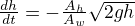
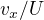
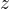

1 Announcements
- [2018-09-11 Tue] In the tank-draining problem, the formula should be . In the first version there was a mistake in the area ratios.
- [2018-09-06 Thu] for the erf-fluids assignment, you should plot  as a function of the combined variable .
- [2018-09-06 Thu] The TA office hours will be on Fridays from 2-3pm in DH1102.
- [2018-09-04 Tue] A curated list of awesome scientific Python resources. https://github.com/rossant/awesome-scientific-python